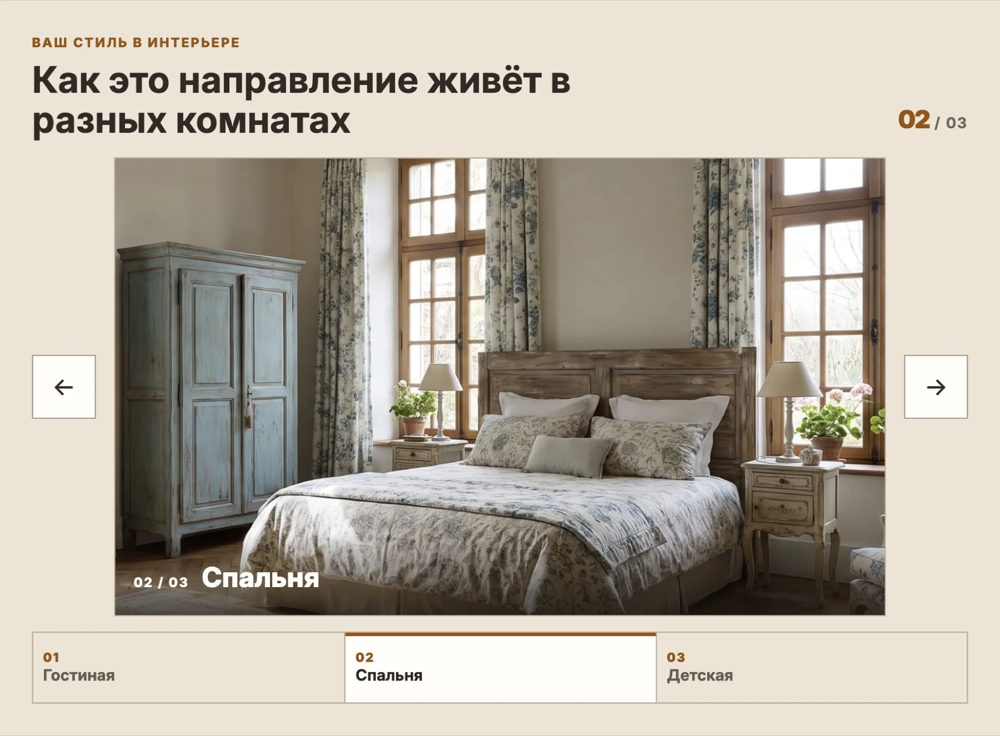
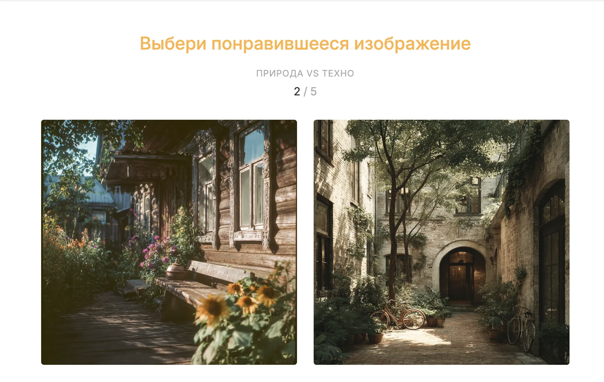
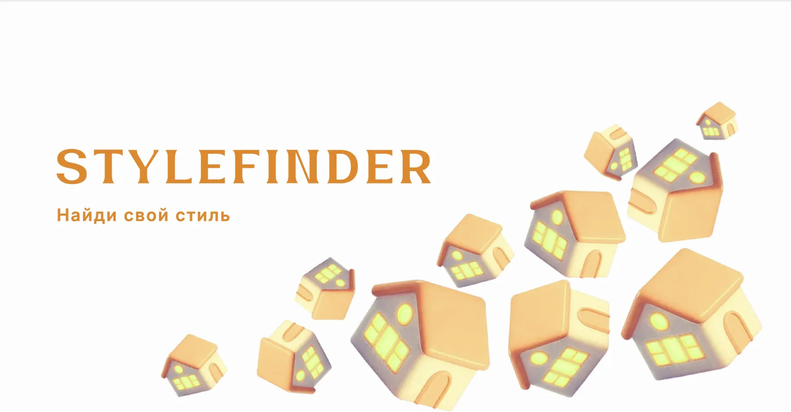
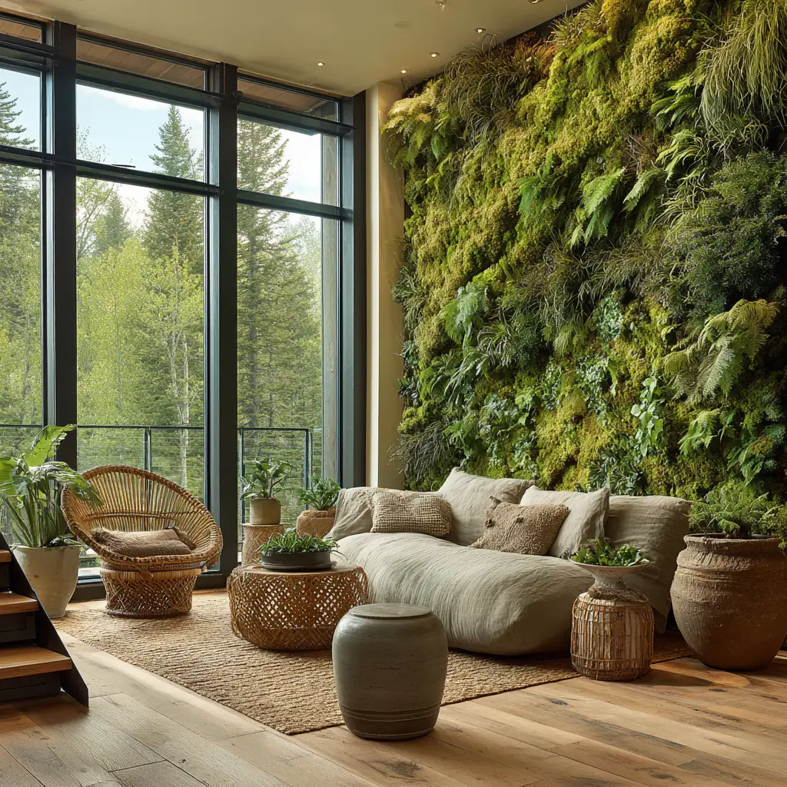
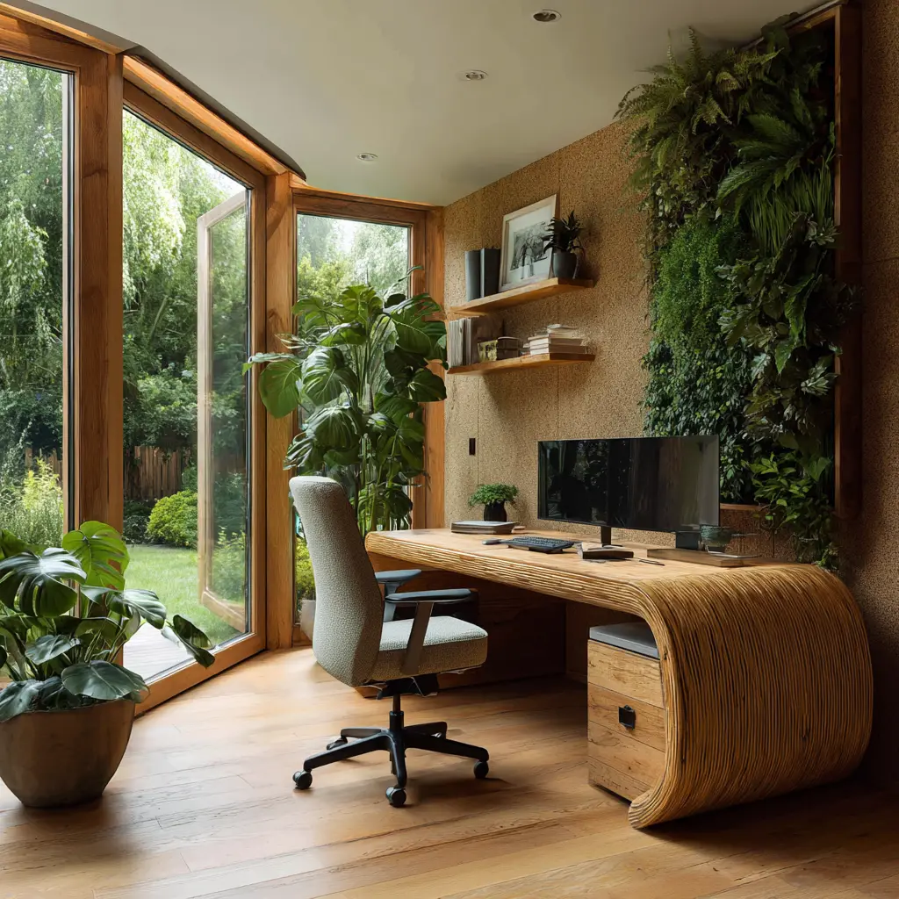

02/03
Stylefinder
Продумать пространство комнаты и расстановку мебели до того, как начнутся реальные перемены.

- Роль
- Разработка
- Стек
- Next.js, React, TypeScript, NestJS, PostgreSQL, Docker, Caddy
- Статус
- Запущен и развивается — stylefinder.online
- 24интерьерных стиля в тесте
- до 18шагов визуального теста
- 29типов мебели в 6 категориях
- 3комнаты для каждого стиля
Что это за проект
Stylefinder помогает человеку перейти от визуальных предпочтений к более конкретному представлению своей комнаты: выбрать интерьерное направление, определить нужную мебель и проверить расстановку.
Основная аудитория — люди, которые обустраивают комнату, планируют перестановку или готовятся к ремонту. Их запрос обычно звучит так: «Мне нравятся разные интерьеры, но я не понимаю, какой подходит мне и как разместить нужную мебель в моей комнате».
Какую задачу решает
Красивое изображение интерьера не отвечает на практические вопросы: поместится ли мебель, останется ли проход, как открывается дверь и где находятся окна.
Stylefinder связывает визуальную часть с планированием пространства — от понравившихся примеров до расстановки мебели с учётом размеров и ограничений комнаты.
Что реализовано
- Тест визуальных предпочтений — подбор интерьерного направления по понравившимся изображениям.
- Анкета и подбор мебели по заданным потребностям.
- Учёт параметров комнаты: размеров помещения и расположения проёмов.
- Планировщик — размещение мебели на плане и работа с её положением.
- Проверка размещения по геометрии комнаты и правилам предметов.
В чём сложность разработки
Планировщик должен учитывать не только форму предмета, но и его размеры, положение, поворот, препятствия и свободное пространство рядом. Изменение одного параметра — например, размеров комнаты — требует повторной проверки всей расстановки.
Отдельная задача — понятно объяснять ограничения: если подходящая расстановка не найдена, это не всегда значит, что она физически невозможна.
Что кейс говорит о KDSV
- Создание интерактивных редакторов.
- Работа с координатами, размерами и геометрическими ограничениями.
- Проектирование многошаговых пользовательских сценариев.
- Связь визуального выбора с функциональной частью продукта.
Материалы
Экраны и материалы



